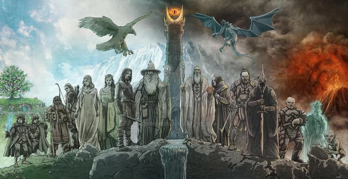

( Էրիկ Վարդանյանի կողմից )
Թոլքինը ֆենթեզի գրականության ամենահայտնի գրողներից մեկն է։ Նա մեզ է թողել ավելի քան հարյուր տարբեր հրատարակչություններ (37 գիրք, 63 հոդված, 121 թարգմանությունն)։ Նա առավել հայտնի է որպես «Հոբիթ», «Մատանիների տիրակալը» և «Սիլմարիլիոն» գրքերի հեղինակ: Ջոն Ռ. Ռ. Թոլքինի ստեղծագործությունները զգալի ազդեցություն են ունեցել 20-րդ դարի մշակույթի վրա։ Դրանք բազմիցս ադապտացվել են ֆիլմերի, անիմացիաների, աուդիո պիեսների, թատերական բեմերի և համակարգչային խաղերի համար։ Ստեղծել են կոնցեպտային ալբոմներ, նկարազարդումներ, կոմիքսներ։ Գրականության մեջ ստեղծվել են Թոլքինի գրքերի մեծ թվով ընդօրինակումներ՝ դրանց շարունակությունները։ Թոլքինի գրքերը Հարի Փոթփրի և Աստվածաշնչի հետ միասին մտնում են ամենա շատ տարբեր լեզուներով թարգմանված թոփ 3 գրքերի մեջ։
Թոլքինի հորինած աշխարհն այնքան մեծ և տարբեր աստվածաշնչյան իրադարձություններով հագեցած որ նոր սկսնակ ընթերցողը կարող է շփոթվել այս մեծ պատմության մեջ։ Այս կայքը ստեղծվել է սկսնակ Թոլքինիստներին օգնելու համար՝ օգնելու հասկանալ և Լեգենդարիումի մեկ մասը դառնալ։ Դրա համար մեր կողմից պատրաստվել են հատուկ բաժիններ՝ «Սյուժե», «Քարտեզներ», «Հերոսներ» իրենց բացատրություններով։ Պրոֆեսոր Թոլքինի Լեգենդարիումը շատ մարդկանց է ոգևորել։ Լեգենդարիումի մեջ յուրաքանչյուր մարդ կարող է գտնել հենց իրեն հոգեհարազատ իր պատմությունը։
